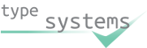

|  | July 2017 - Present |
June 2014 - July 2017 |
December 2012 - June 2014 |
July 2010 - December 2012 |
Summer 2008 |
| 2010 | BSc Computer Science First Class with Honours University of Durham |
| 2007 | A Level History: A, Biology: B, ICT: B Fallibroome High School |
| 2005 | GCSE 7 A's (incl. English,Maths,Double Science) 3 B's. Fallibroome High School |
| 2016 | flatMappy bird: functional flappy bird An overview of functional reactive programming, in particular Coroutines. Scala eXchange |